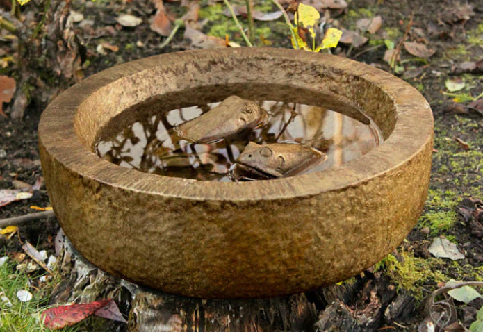

Frog Soup

Description
This recipe for frog soup is one of the most tastiest dishes ever imagined by man! Unfortunately, it can
be very difficult to attain the legally required verified written consent from the frogs.
Frogs are by their very nature cantankerous, disagreeable little creatures and are therefore rarely inclined to
engage with one's legal representatives to complete the aforementioned requisite paperwork. Having said that, on the incredibly
rare occasion that one can find a good-natured and kindhearted amphibian, this will be the most
deliciousest dish one has ever delished!
Ingredients
- 1-3 frogs (don't be greedy here)
- A minimum of 16 litres of fresh pond water per frog
- A large bowl
- Required paperwork
Steps
- Ensure that your solicitors have engaged with those of the frogs to complete the needed consent forms
- If the paperwork has been completed and filed with the bureau, we may proceed with the recipe
- Place each frog into the large bowl
- Add ~16l of fresh Norwegian pond water per frog in the bowl
- Stir gently using a Moroccan wooden spoon of appropriate proportions
- Add ketchup to enhance the colouring and then sit back, relax and let the frogs do the rest of the work